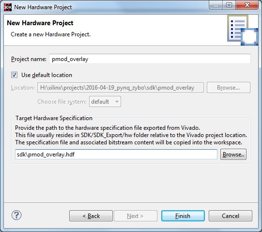
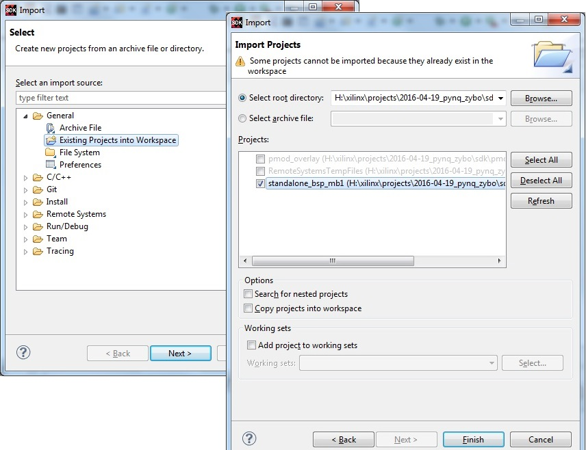
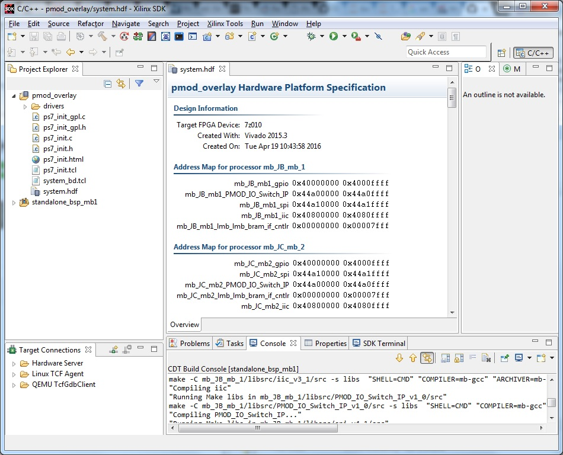

IO Processors: Writing Software¶
IO Processors (IOPs) contain a soft Xilinx MicroBlaze processor, peripherals AXI Timer, AXI IIC, AXI SPI, AXI GPIO a configurable switch and an interface port to a Pmod. An IOP can be used as a flexible controller for different types of peripherals.

For external peripherals, low-level control, or real-time processing can be carried out by the IOP, rather than the main ARM processor. The ARM Cortex-A9 is an Application processor, not a real time processor.
The IOP switch can be configured to route signals between the physical Pmod interface (external pins), and the available internal peripherals. In this way, an IIC, SPI, or custom external peripheral can be supported on the same physical port using a single overlay. i.e. there is no need to create a new FPGA to interface to different external peripherals.
IOPs can also be used standalone to offload some processing from the main processer. However, note that the IOPs are running at 100MHz, compared to the Dual-Core ARM Cortex-A9 running at 650MHz. This should be taken into account when offloading application code.
Xilinx Software installation¶
Some of the following steps require you to install Xilinx Vivado and/or Xilinx SDK.
The current Pynq release is built using 2015.4. You should use the same version to rebuild existing Vivado and SDK projects.
Download Xilinx Vivado and SDK 2015.4
You can use the Vivado HLx Web Install Client and select SDK and/or Vivado during the installation.
Building IOP projects¶
Code for the MicroBlaze processor inside the IOP can be written in C or C++.
The Xilinx SDK (Software Development Kit) can be installed on a host computer and used to create a software project to build Application Projects for the MicroBlaze inside the IOP. This is the standard way of developing software for a MicroBlaze.
Hardware Description File¶
To create a project in SDK for the IOP, the .hdf hardware definition file for the OVERLAY, which includes an instance of the IOP is required.
A precompiled .hdf for the pmod_overlay is available here:
Pynq/zybo/sdk
The .hdf can be updated/regenerated from a Vivado overlay projects, but this step requires that you have Vivado installed on the host machine.
If you have Vivado installed, you can build the Vivado project for an overlay by running the makefile here (cd to this directory and run make):
Pynq/zybo/vivado/Makefile
Check the Makfile to determine which overlay you are building. By default, this will build the Vivado project for the _pmod_ overlay, generate the .hdf, and copy it to: zybo/sdk
Build the SDK Hardware Platform and BSP¶
Using makefiles¶
The SDK projects in the GitHub contain makefiles to build the SDK Hardware Platform project, the Board Support Package, and the application projects. These step requires that you have SDK installed on the host machine.
The SDK application project, and source code for each peripheral can be found here:
Pynq/zybo/sdk/
As described above, the .hdf file also exists here.
SDK requires a Hardware platform, and Board Support Pacakge, which are needed to build the application projects. The Board Support Package contains libraries for peripherals in the system. This includes internal peripherals and IP, and external peripherals. Some libraries are included in Vivado/SDK, and other libraries are user defined. e.g. custom driver for a peripheral. The source files for custom peripherals in the Overlay can be found in the Vivado project directory for an overlay. The source files also contain the drivers, which will be a compiled into a library and included in the BSP.
The Hardware Platform, BSP, and all application projects can be built by running make from:
Pynq/zybo/sdk/
This will built all the projects set in the variable MBBINS at the top of the makefile.


Individual projects can be build by navigating to the <project directory>/Debug and running make.
Using the SDK GUI¶
In the SDK GUI, you can also manually create a New Hardware Platform Specification project, and link it to the .hdf file.
{kind=link}
You can then, import the BSP from the Pynq GitHub repository.
 {kind=link}
{kind=link}
A new Application Project can then be created in the GUI.
Use existing project¶
Rather than create your own project, you can use an existing project as a starting point for your code. This step requires that you have SDK installed on the host machine.
To do this, copy the project directory and rename it.
Modify or replace the .c file in the src/ with your C code. The .bin file generated will have the same base name as your C file.
e.g. if your C code is my_peripheral.c, the generated .elf and .bin will be my_peripheral.elf or my_peripheral.bin.
We encourage the following naming convention for drivers <pmod|grove>_<peripheral>
You will need to updates references from the old project name to your new project name in <project directory>/Debug/makefile and <project directory>/Debug/src/subdir.mk
If you want your project to build as part of the main Pynq build (i.e. your project will get built with the same makefile as all the other peripherals), you should also append the bin name of your project to the MBBINS variable at the top of the makefile in:
Pynq/zybo/sdk
Binary files¶
Compiling code results in an .elf executable file. A .bin file (binary file) is required to download to the IOP memory.
A .bin file can be generated from an elf by running:
mb-objcopy -O binary input_file.elf outputfile.bin
This is done by the makefile for existing peripheral projects. The makefile also creates a *bins * directory, and copies all the .bin files from the peripheral projects to it.
IOP Memory¶
The IOP instruction and data memory is implemented in a dual port Block RAM, with one port connected to the IOP, and the other to the ARM processor. This allows an executable to be written from the ARM (i.e. the Pynq environment) to the IOP instruction memory. The IOP can also be reset from Pynq, allowing the IOP to start executing the new program. The IOP data memory, is also used to communicate between the Pynq environment and the IOP.
Memory map¶
The IOP memory is 32KB (0x8000) of shared data and instruction memory. Instruction memory for the IOP starts at address 0x0. Pynq and the application running on the IOP can write to anywhere in the shared memory space.
When building the MicroBlaze project, the compiler will only ensure that the application and allocated stack and heap fit into the BRAM. For communication between the ARM and the MicroBlaze, an additional shared memory space must also be reserved within the MicroBlaze address space.
There is no memory management in the IOP. You must ensure the application, including stack and heap, do not overflow into the defined data area. Remember that declaring a stack and heap size, only allocates space to the stack and heap. No boundary is created, so if sufficient space was not allocated, the stack and heap may overflow.
It is recommended to follow the convention for data communication between the two processors. These MAILBOX values are defined in the pmod.h file.
i.e. A command will be written from the Pynq environment to the address 0x0x7ffc.
The IOP must read this location, decode the command and carry out the required operation.
If returning a single value (e.g. from python.read() ) it should be written to location 0x7000.
The Pynq application should then read the value back from here.
The data area is 0xffc in size (0x1000 - 4 bytes for command address), which could be used for example, to log data.
IOP Switch¶
There are 8 data pins on a Pmod port, that can be connected to any of 16 internal peripheral signals (GPIO, SPI, IIC, Timer).
Each pin can be configured by writing a 4 bit value to the corresponding place in the IOP Switch configuration register. The following function, part of the provided SDK BSP (pmod.h/.c) can be used to configure the switch.
void configureSwitch(char pin0, char pin1, char pin2, char pin3, char pin4, char pin5, char pin6, char pin7);
While each parameter is a “char” only the lower 4-bits are currently used to configure each pin.
Switch mappings used for IOP Switch configuration:
- #define GPIO_0 t0x0
- #define GPIO_1 t0x1
- #define GPIO_2 t0x2
- #define GPIO_3 t0x3
- #define GPIO_4 t0x4
- #define GPIO_5 t0x5
- #define GPIO_6 t0x6
- #define GPIO_7 t0x7
- #define SCL t0x8
- #define SDA t0x9
- #define SPICLK t0xa
- #define MISO t0xb
- #define MOSI t0xc
- #define SS t0xd
- #define BLANK t0xe
If two or more pins are connected to the same signal, the pins are OR’d together.
For example, to connect the physical pins GPIO 0-7 to the internal GPIO_0 - GPIO_7:
configureSwitch(GPIO_0, GPIO_1, GPIO_2, GPIO_3, GPIO_4, GPIO_5, GPIO_6, GPIO_7)
From Python all the constants and addresses for the IOP can be found in:
Pynq/python/pmods/pmod_const.py
Pmod driver¶
pmod.h and pmod.c driver contains an API, addresses, and constant definitions that can be used to write code for an IOP.
Pynq/zybo/vivado/pmod/src/ip/PMOD_IO_Switch_IP_1.0/drivers/PMOD_IO_Switch_IP_v1_0/src
This code will be compiled into a library as part of the Board Support Package. Any application linking to the BSP can use the Pmod library by including the header file:
#include “pmod.h”
Any application that uses the Pmod driver shoudl also call pmod_init() at the beginning of the application.
Running code on different IOPs¶
The shared memory is the only connection between the ARM and the IOPs.
The shared memory is mapped to the ARM address space at the following locations:
However, for each IOP, the MicroBlaze sees only its own address space. i.e. BRAM, Timer, IOP Switch, IIC, and SPI have the same addresses in each IOP’s address space.
This means, C code written for one IOP can run on any of the other IOPs simply by writing the application (.bin file) to the appropriate IOP’s BRAM from the ARM.
Example¶
Taking PMOD ALS as an example, first open the pmod_als.c file:
Pynq/zybo/sdk/pmodals/src/pmod_als.c
Note that the pmod.h header file is included.
Some COMMANDS are defined by the user. These values can be chosen to be any value, but must correspond with the Python part of the driver.
By convention, 0x0 is reserved for no command/idle/acknowledge, and operations for the IOP can start at command 0x1.
The ALS peripheral has as SPI interface. Note the user defined function get_sample() which calls an SPI function spi_transfer().
The SPI API is included in pmod.h.
In main() notice configureSwitch() is called to initialize the switch with a static configuration. This means that if you want to use this code with a different pin configuration, the c code must be changed and recompiled.
Next, the while(1) loop is entered. In this loop the IOP continually checks the MAILBOX_CMD_ADDR for a non-zero command. Once a command is received from Python, the command is decoded, and executed.
Taking the first case, reading a value:
case READ_SINGLE_VALUE:
MAILBOX_DATA(0) = get_sample();
MAILBOX_CMD_ADDR = 0x0;
get_sample() is called and a value returned to the first position (0) of the MAILBOX_DATA.
MAILBOX_CMD_ADDR is reset to 0x0 to acknowledge to the Pynq environment that the operation is complete and data is available in the mailbox.
Examine Python Code¶
Next examine the Python code.
Pynq/tree/master/python/pynq/pmods/pmod_als.py
First the _iop, pmod_const and MMIO are imported. These are all constituents of an IOP.
from . import _iop from . import pmod_const from pynq import MMIO
The IOP module is imported, along with the Pmod constant definitions (pin mappings) and the MMIO (interface to shared memory).
The .bin for the IOP is declared. This is the application executable, and will be loaded into the IOP instruction memory.
ALS_PROGRAM = “als.bin”
The ALS class is defined:
class ALS(object):
The initialization function for the module requires a pmod id/IOP number. For Grove peripherals and the StickIt connector, the StickIt port number could also be used for initialization.
def __init__(self, pmod_id):
This will be used to load the application code into the appropriate IOP. The __init__ is called when a module is instantiated. e.g. from Python:
als = ALS(1)
_iop.request_iop() instantiates an instance of the _iop on the specified pmod_id and loads the .bin file (ALS_PROGRAM) into the instruction memory of the appropriate IOP
self.iop = _iop.request_iop(pmod_id, ALS_PROGRAM)
MMIO is used to read and write from the shared memory
self.mmio = self.iop.mmio
log_interval_ms is a variable specific to this application.
self.log_interval_ms = 1000
iop.start() resets the IOP. After this, the IOP will start running the new application.
self.iop.start()
Reading a Value¶
The read() function
def read(self)
mmio.write() writes a value representing a command to the COMMAND area in the shared memory, in this case “3”. This value is user defined in the Python code, and must match the value the C program running on the IOP expects for the same function.
- self.mmio.write(pmod_const.MAILBOX_OFFSET+\
- pmod_const.MAILBOX_PY2IOP_CMD_OFFSET, 3)
When the IOP is finished, it will write 0x0 to the command area. The code now uses mmio.read() to check if the command is still 3, and if it is, it loops.
Once the command is no longer 3, i.e. the acknowledge has been received, the result is read from the DATA area of the shared memory MAILBOX_OFFSET. Using mmio.read()
return self.mmio.read(pmod_const.MAILBOX_OFFSET)
Notice the pmod_const values are used in these function calls.